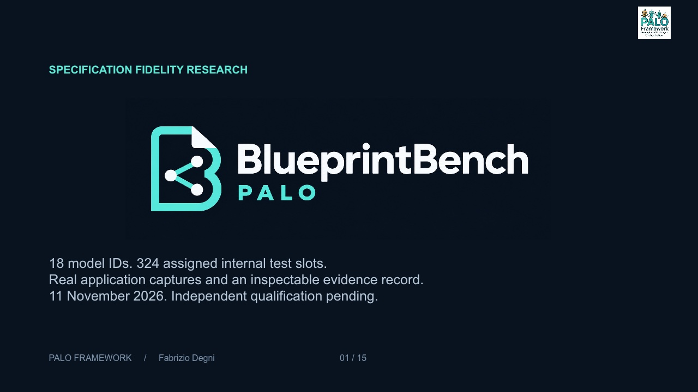
01. Specification fidelity research
Read the slide transcript
SPECIFICATION FIDELITY RESEARCH
18 model IDs. 324 assigned internal test slots.
Real application captures and an inspectable evidence record.
11 November 2026. Independent qualification pending.
PALO FRAMEWORK / Fabrizio Degni 01 / 15
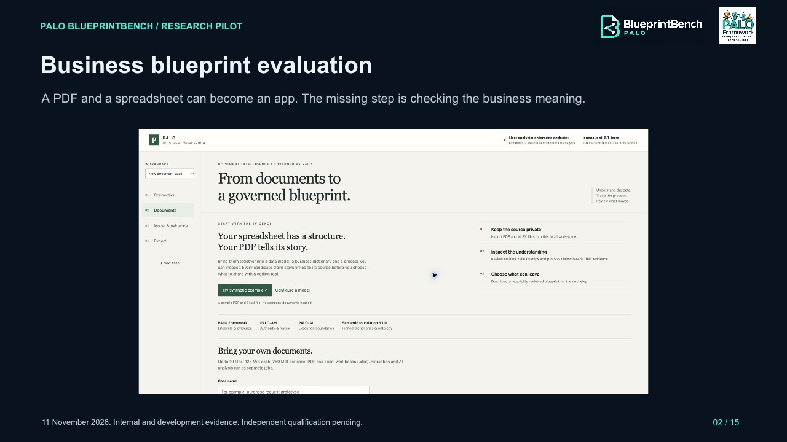
02. Business blueprint evaluation
Read the slide transcript
PALO BLUEPRINTBENCH / RESEARCH PILOT
Business blueprint evaluation
A PDF and a spreadsheet can become an app. The missing step is checking the business meaning.
11 November 2026. Internal and development evidence. Independent qualification pending.
02 / 15
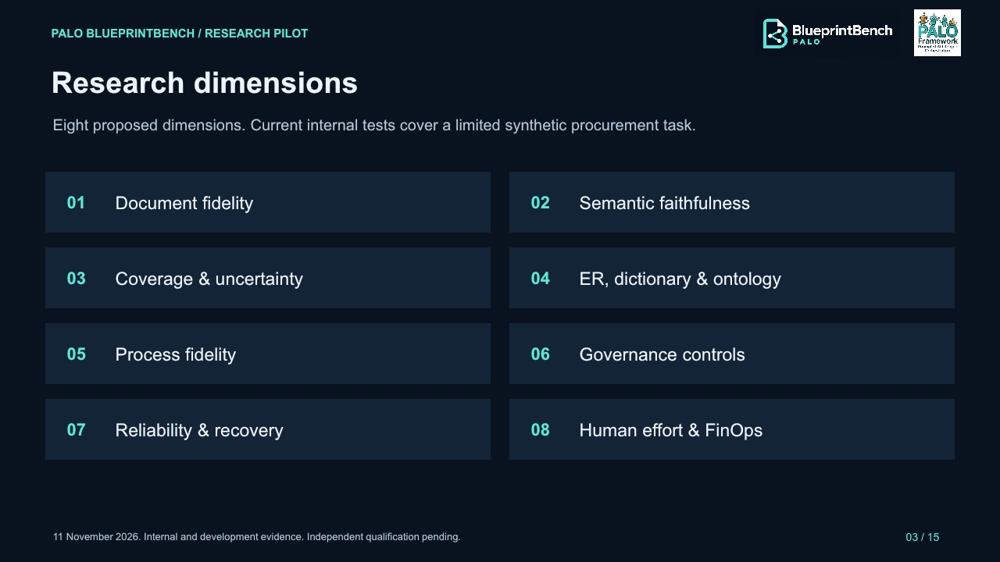
03. Research dimensions
Read the slide transcript
PALO BLUEPRINTBENCH / RESEARCH PILOT
Research dimensions
Eight proposed dimensions. Current internal tests cover a limited synthetic procurement task.
11 November 2026. Internal and development evidence. Independent qualification pending.
03 / 15
01
Document fidelity
02
Semantic faithfulness
03
Coverage & uncertainty
04
ER, dictionary & ontology
05
Process fidelity
06
Governance controls
07
Reliability & recovery
08
Human effort & FinOps
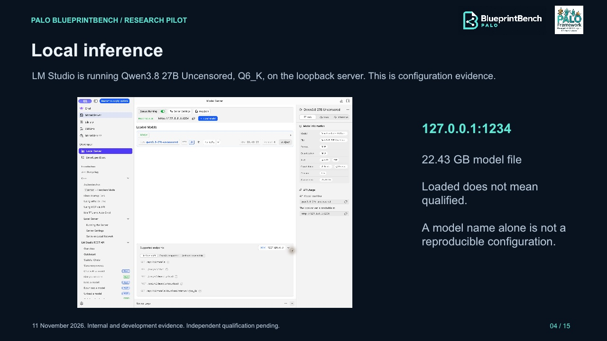
04. Local inference
Read the slide transcript
PALO BLUEPRINTBENCH / RESEARCH PILOT
Local inference
LM Studio is running Qwen3.8 27B Uncensored, Q6_K, on the loopback server. This is configuration evidence.
11 November 2026. Internal and development evidence. Independent qualification pending.
04 / 15
127.0.0.1:1234
22.43 GB model file
Loaded does not mean qualified.
A model name alone is not a reproducible configuration.
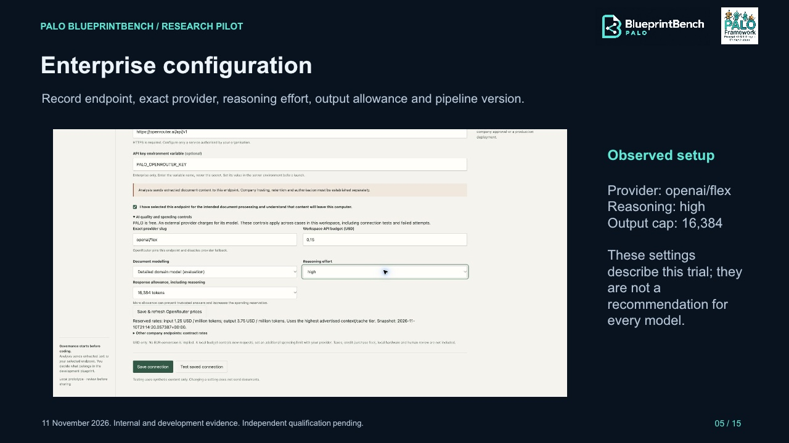
05. Enterprise configuration
Read the slide transcript
PALO BLUEPRINTBENCH / RESEARCH PILOT
Enterprise configuration
Record endpoint, exact provider, reasoning effort, output allowance and pipeline version.
11 November 2026. Internal and development evidence. Independent qualification pending.
05 / 15
Observed setup
Provider: openai/flex
Reasoning: high
Output cap: 16,384
These settings describe this trial; they are not a recommendation for every model.
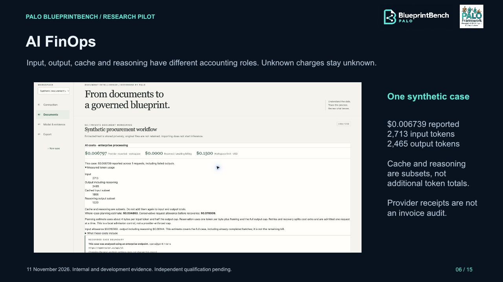
06. AI FinOps
Read the slide transcript
PALO BLUEPRINTBENCH / RESEARCH PILOT
AI FinOps
Input, output, cache and reasoning have different accounting roles. Unknown charges stay unknown.
11 November 2026. Internal and development evidence. Independent qualification pending.
06 / 15
One synthetic case
$0.006739 reported
2,713 input tokens
2,465 output tokens
Cache and reasoning are subsets, not additional token totals.
Provider receipts are not an invoice audit.
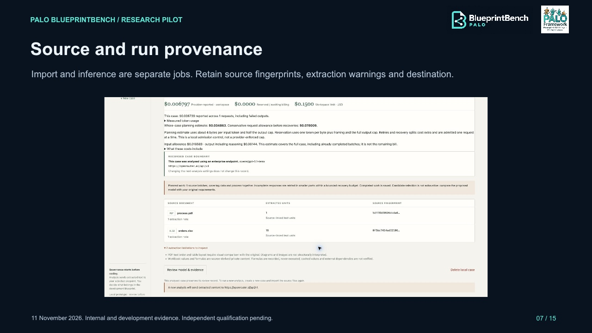
07. Source and run provenance
Read the slide transcript
PALO BLUEPRINTBENCH / RESEARCH PILOT
Source and run provenance
Import and inference are separate jobs. Retain source fingerprints, extraction warnings and destination.
11 November 2026. Internal and development evidence. Independent qualification pending.
07 / 15
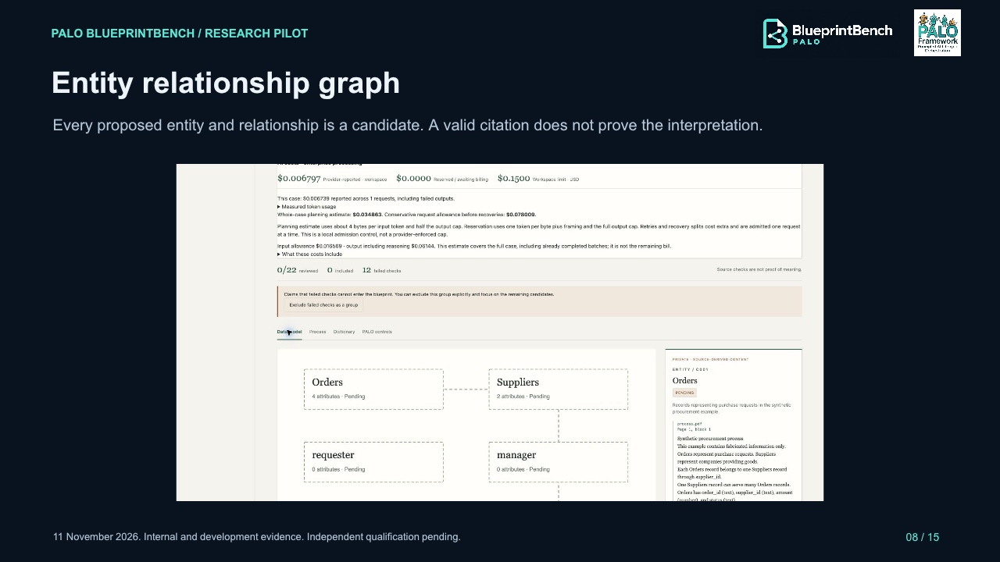
08. Entity relationship graph
Read the slide transcript
PALO BLUEPRINTBENCH / RESEARCH PILOT
Entity relationship graph
Every proposed entity and relationship is a candidate. A valid citation does not prove the interpretation.
11 November 2026. Internal and development evidence. Independent qualification pending.
08 / 15
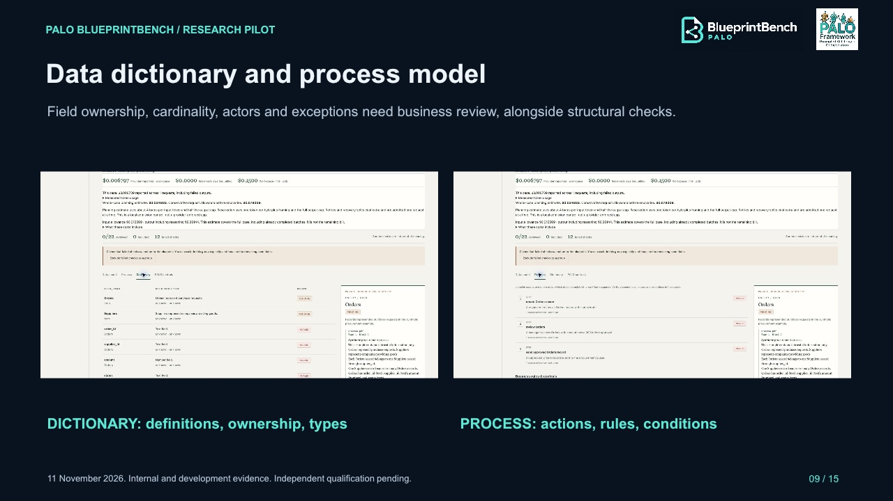
09. Data dictionary and process model
Read the slide transcript
PALO BLUEPRINTBENCH / RESEARCH PILOT
Data dictionary and process model
Field ownership, cardinality, actors and exceptions need business review, alongside structural checks.
11 November 2026. Internal and development evidence. Independent qualification pending.
09 / 15
DICTIONARY: definitions, ownership, types
PROCESS: actions, rules, conditions
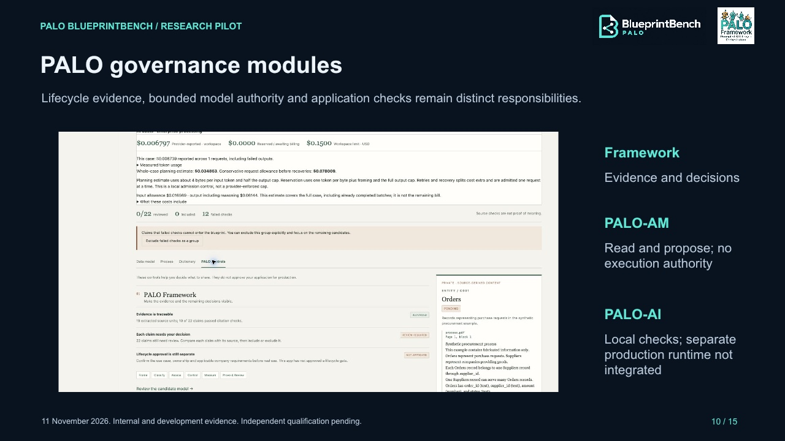
10. PALO governance modules
Read the slide transcript
PALO BLUEPRINTBENCH / RESEARCH PILOT
PALO governance modules
Lifecycle evidence, bounded model authority and application checks remain distinct responsibilities.
11 November 2026. Internal and development evidence. Independent qualification pending.
10 / 15
Framework
Evidence and decisions
PALO-AM
Read and propose; no execution authority
PALO-AI
Local checks; separate production runtime not integrated
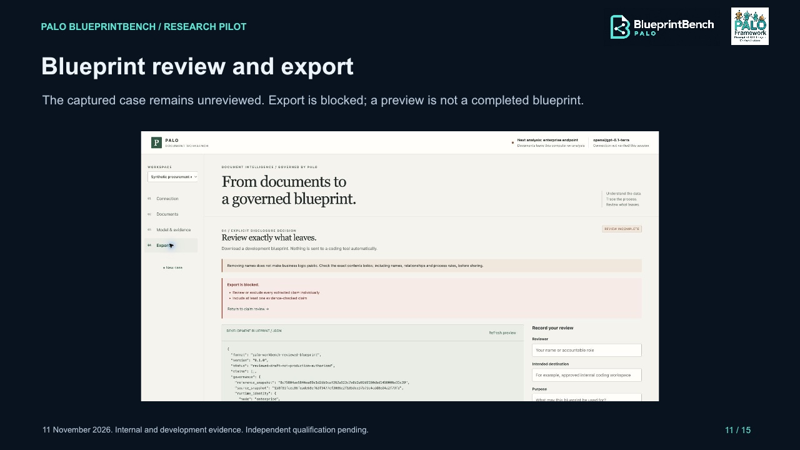
11. Blueprint review and export
Read the slide transcript
PALO BLUEPRINTBENCH / RESEARCH PILOT
Blueprint review and export
The captured case remains unreviewed. Export is blocked; a preview is not a completed blueprint.
11 November 2026. Internal and development evidence. Independent qualification pending.
11 / 15
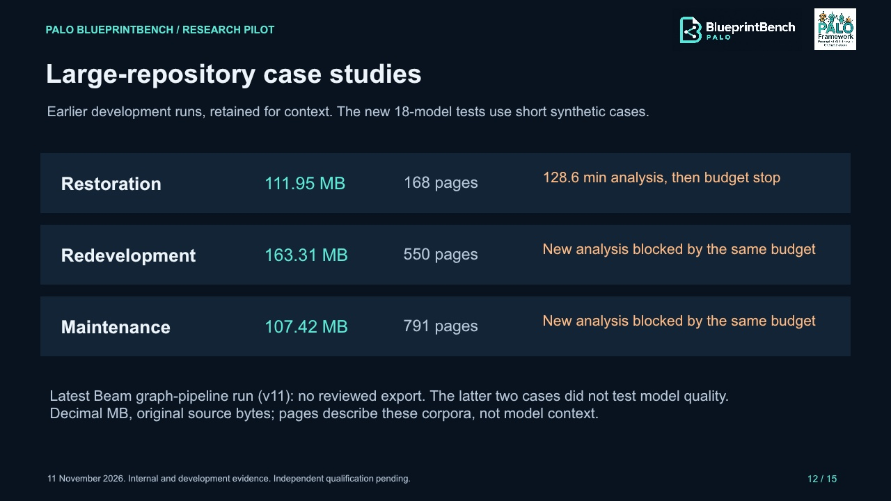
12. Large-repository case studies
Read the slide transcript
PALO BLUEPRINTBENCH / RESEARCH PILOT
Large-repository case studies
Earlier development runs, retained for context. The new 18-model tests use short synthetic cases.
11 November 2026. Internal and development evidence. Independent qualification pending.
12 / 15
Restoration
111.95 MB
168 pages
128.6 min analysis, then budget stop
Redevelopment
163.31 MB
550 pages
New analysis blocked by the same budget
Maintenance
107.42 MB
791 pages
New analysis blocked by the same budget
Latest Beam graph-pipeline run (v11): no reviewed export. The latter two cases did not test model quality.
Decimal MB, original source bytes; pages describe these corpora, not model context.
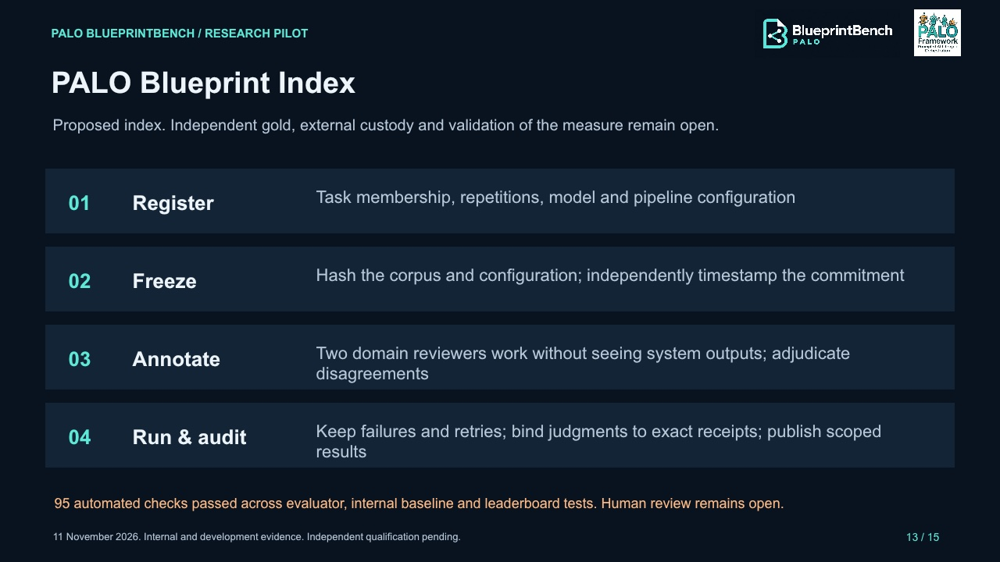
13. PALO Blueprint Index
Read the slide transcript
PALO BLUEPRINTBENCH / RESEARCH PILOT
PALO Blueprint Index
Proposed index. Independent gold, external custody and validation of the measure remain open.
11 November 2026. Internal and development evidence. Independent qualification pending.
13 / 15
01
Register
Task membership, repetitions, model and pipeline configuration
02
Freeze
Hash the corpus and configuration; independently timestamp the commitment
03
Annotate
Two domain reviewers work without seeing system outputs; adjudicate disagreements
04
Run & audit
Keep failures and retries; bind judgments to exact receipts; publish scoped results
95 automated checks passed across evaluator, internal baseline and leaderboard tests. Human review remains open.
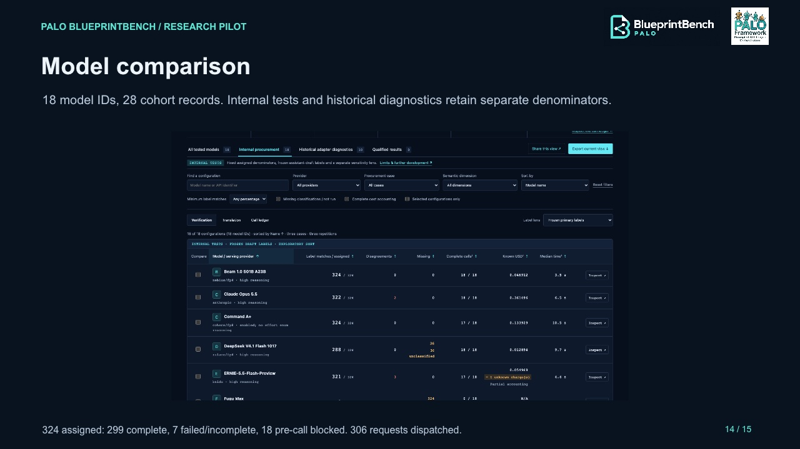
14. Model comparison
Read the slide transcript
PALO BLUEPRINTBENCH / RESEARCH PILOT
Model comparison
18 model IDs, 28 cohort records. Internal tests and historical diagnostics retain separate denominators.
324 assigned: 299 complete, 7 failed/incomplete, 18 pre-call blocked. 306 requests dispatched.
14 / 15
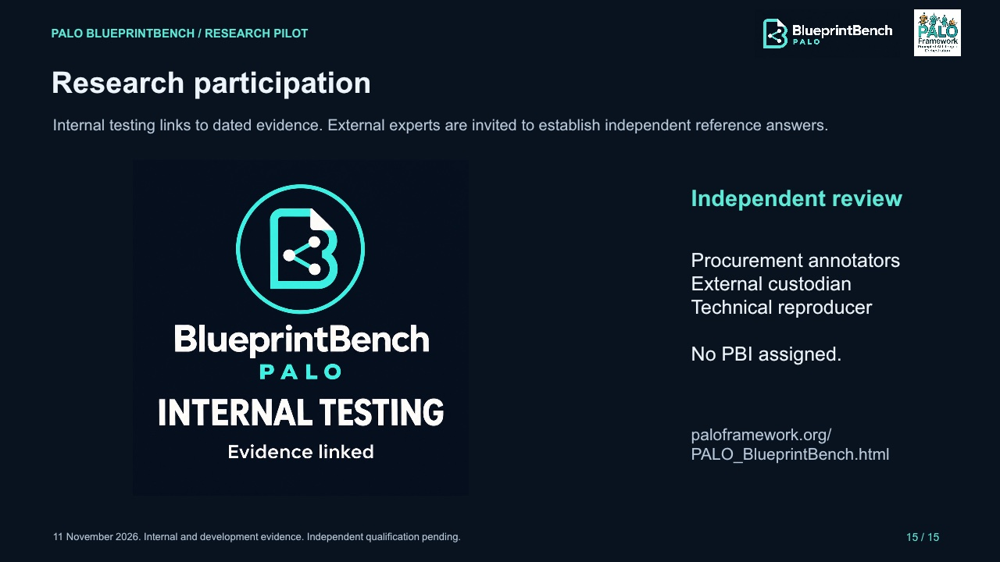
15. Research participation
Read the slide transcript
PALO BLUEPRINTBENCH / RESEARCH PILOT
Research participation
Internal testing links to dated evidence. External experts are invited to establish independent reference answers.
11 November 2026. Internal and development evidence. Independent qualification pending.
15 / 15
Independent review
Procurement annotators
External custodian
Technical reproducer
No PBI assigned.
paloframework.org/
PALO_BlueprintBench.html